IMBIT
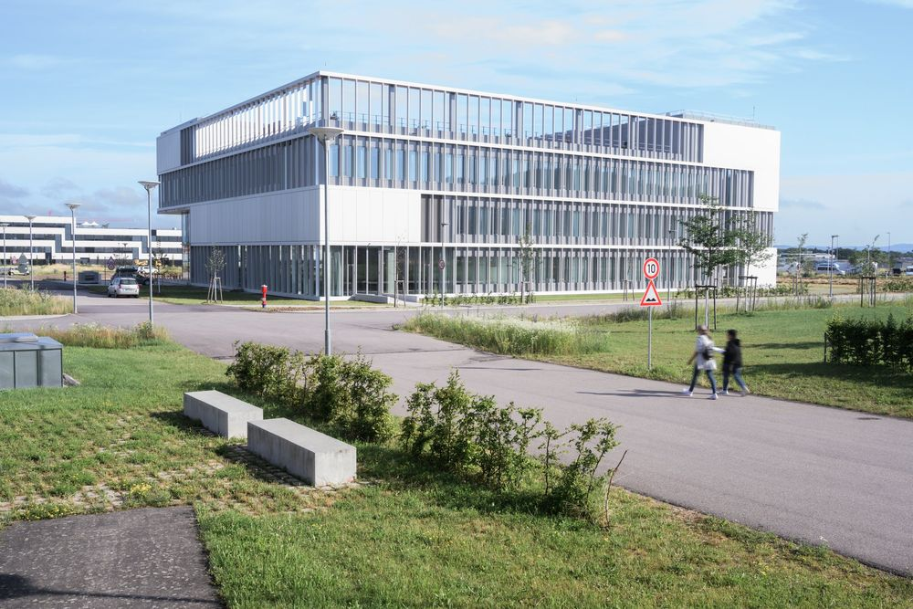
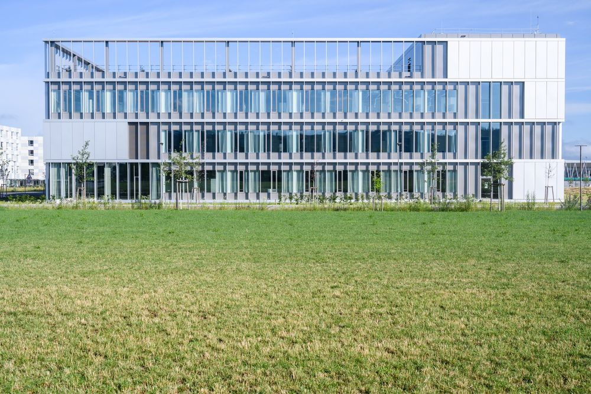
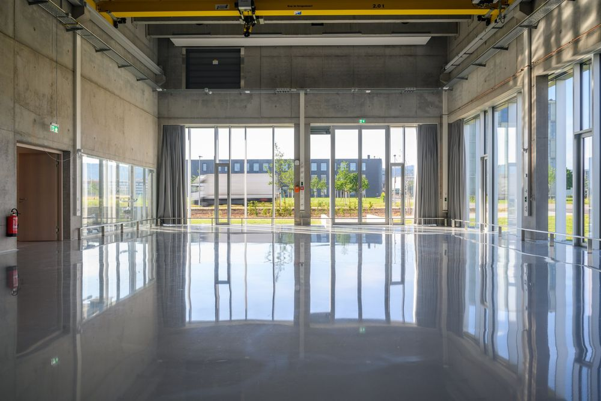
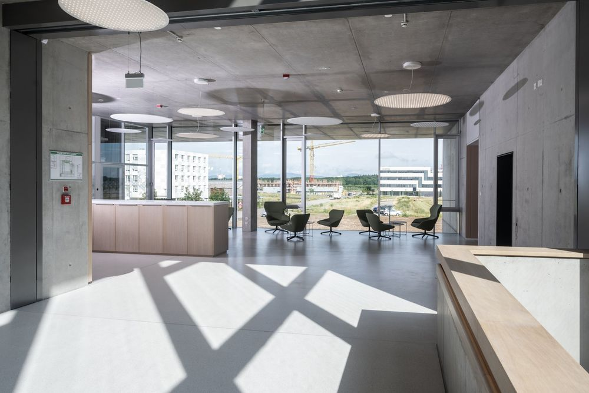
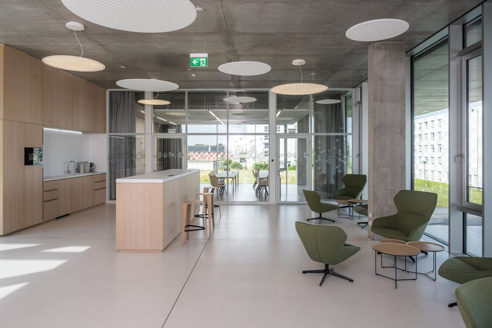
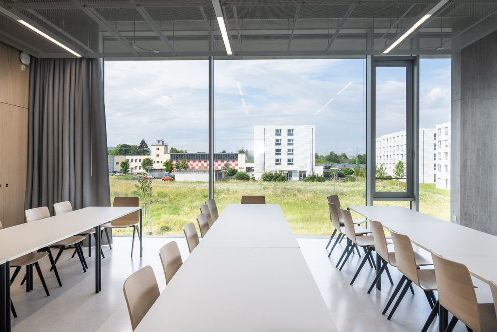
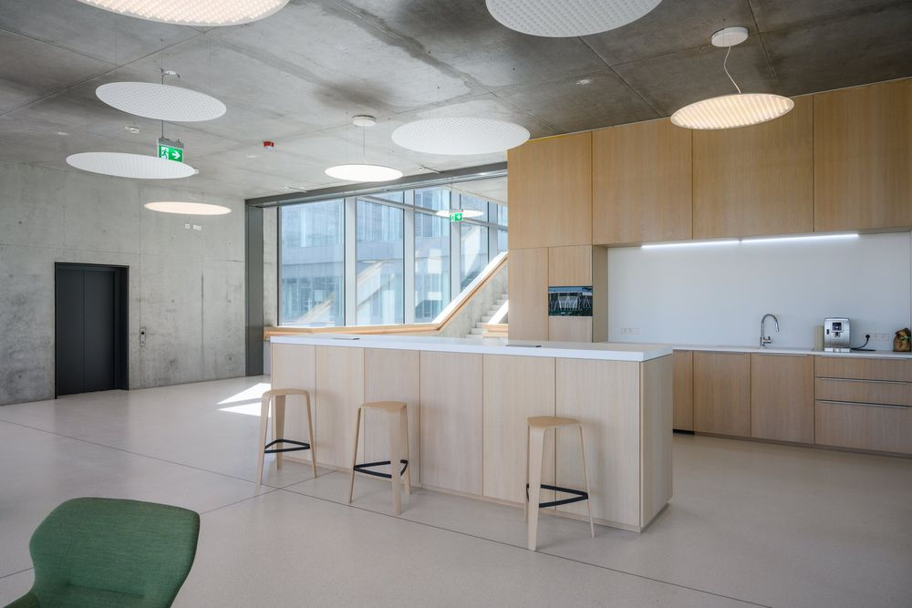
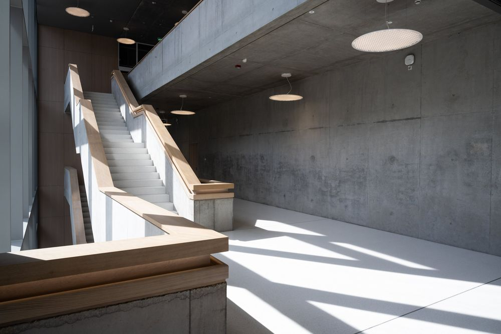
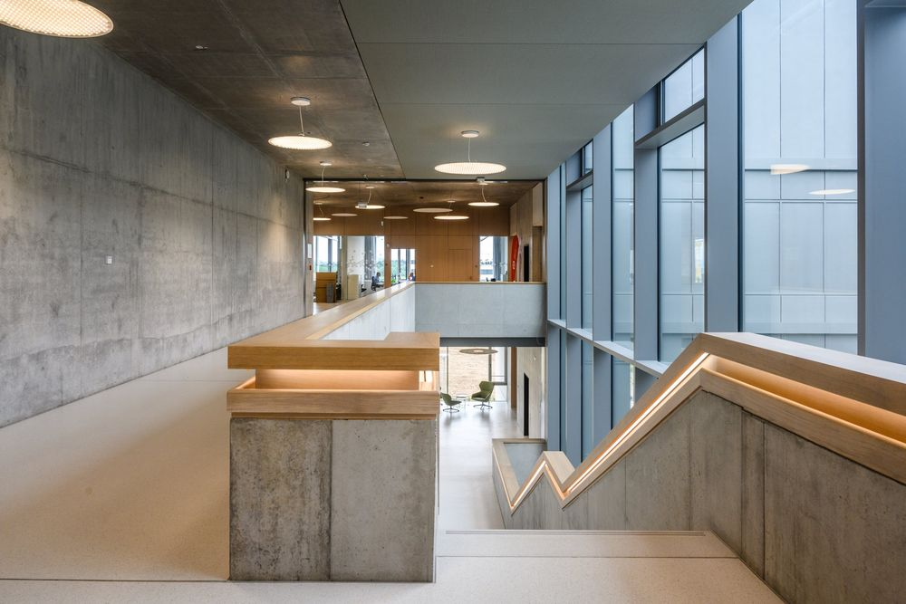
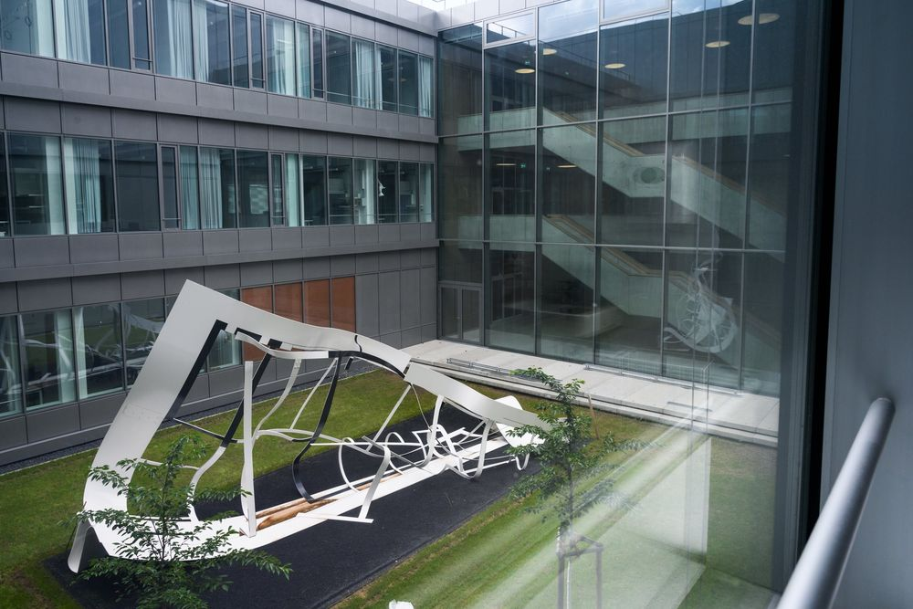
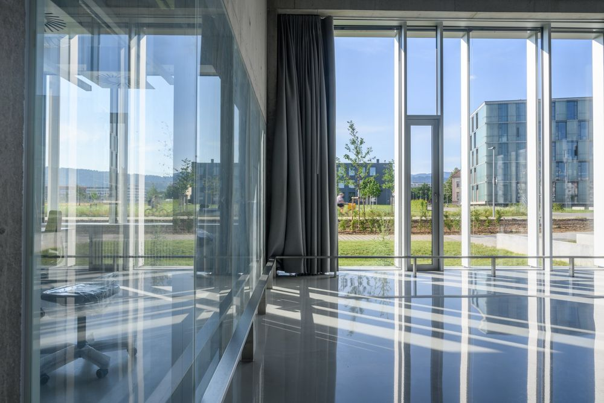
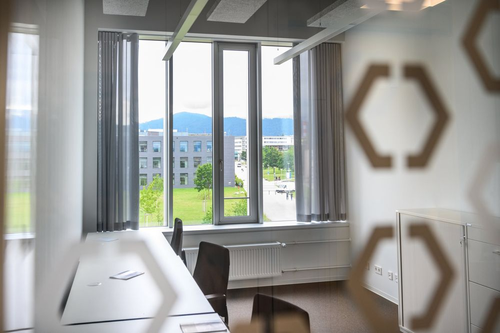
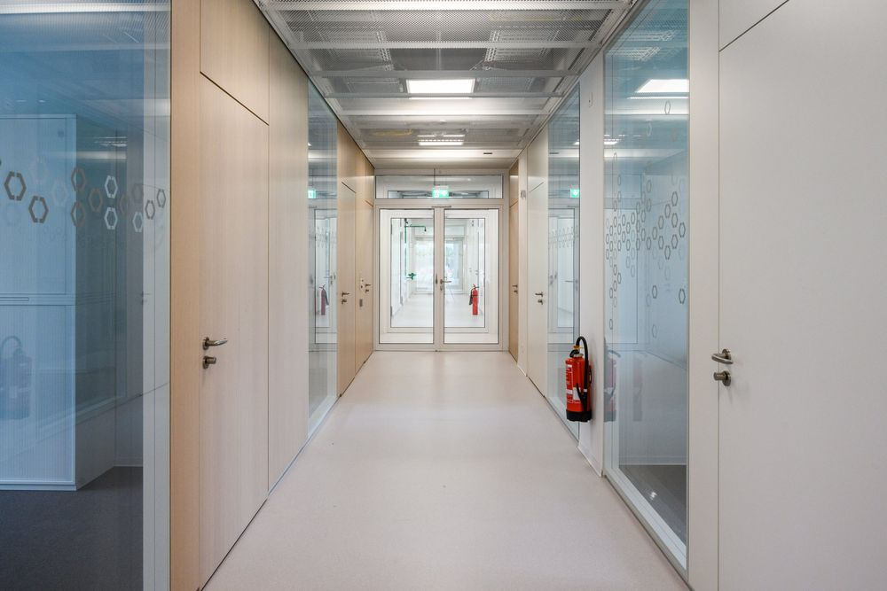













IMBIT
Architekturfotografie, 2021
Dokumentation des Forschungsgebäudes IMBIT (Intelligent Machine-Brain Interfacing Technology) der Universität Freiburg, aussen und innen.